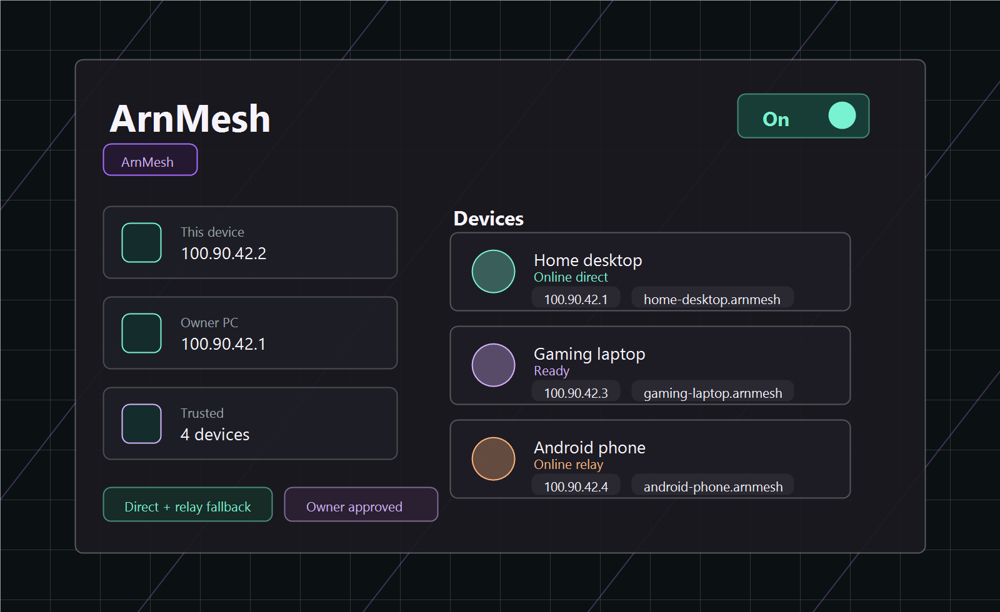

Home Access
Connect your own PC, phone, or laptop into one trusted private mesh. Reach devices by stable mesh IPs and hostnames when you are away from home.
Private mesh networking
Create a private local-style network between your Windows PCs and Android devices. Use it for home access, trusted device sharing, or LAN-style gaming with friends.
Android is currently distributed as an APK until Play Store release.
What it does
ArnMesh pairs devices with QR codes or connection codes, keeps owner approval in the loop, and gives each approved device a stable mesh address and hostname.

Built for two everyday setups
Connect your own PC, phone, or laptop into one trusted private mesh. Reach devices by stable mesh IPs and hostnames when you are away from home.
Invite friends into a controlled mesh for LAN-style play. The owner approves devices, and trusted members can be allowed to invite more devices.
Current capabilities
Generate a short-lived invite, scan it on Android, or paste it on another PC.
New devices wait for approval before they can participate in the mesh.
Approved devices receive managed 100.90.x.x addresses and .arnmesh hostnames.
ArnMesh tries direct UDP first, then falls back to a blind encrypted relay when needed.
Keep separate networks for your own devices, friends, testing, or temporary groups.
Private tunnel keys are intended to stay on the device, not on the coordinator.
Security model
ArnMesh is not an anonymity VPN provider. It is a private mesh tool for devices you approve. Tunnel payloads are encrypted between approved devices. The coordinator helps with pairing, discovery, and relay fallback; it is not designed to receive private keys or decrypted traffic.
FAQ
No. ArnMesh is for private mesh networks between your own approved devices and trusted friends. It is not built to hide your identity or replace a commercial VPN.
ArnMesh tries direct UDP first. If relay fallback is needed, the relay forwards encrypted packets; it should not need private keys or decrypted payloads.
The Windows app includes a local service, tunnel engine, firewall rules, and an uninstall entry. The installer sets those up so the app can work after reboot.
Yes. Create an invite from the owner device, scan or paste the code on the new device, then approve the device from the owner profile.
Android is currently distributed as an APK. That means you need to install it manually until a Play Store listing exists.
Normal updates replace app and service files. Profiles and keys are stored separately from the install folder, so they are intended to survive updates.